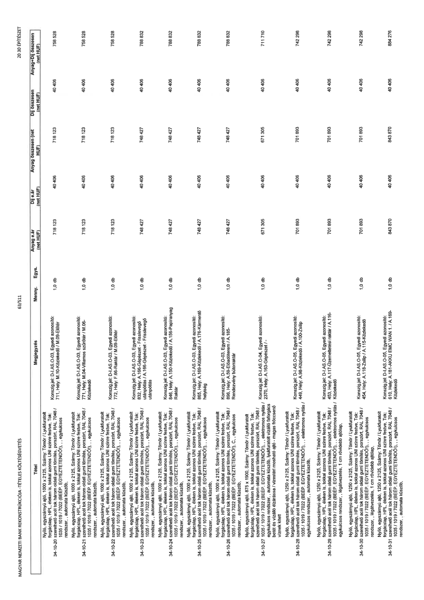

| Tétel | Megjegyzés | Menny. | Egys. | Anyag e.ár (net HUF) | Díj e.ár (net HUF) | Anyag összesen (net HUF) | Díj összesen (net HUF) | Anyag+Díj összesen (net HUF) |
|---|---|---|---|---|---|---|---|---|
| 34-10-20 Nyíló, egyszárnyú ajtó, 1000 x 2125, Szárny: Tömör / Lyukfurtolt forgácslap, HPL éléken is, tokkal azonos UNI színre festve, Tok: szerelhető acél tok három oldali gumi tömítés, porszórt, RAL 7048 / 1035 / 1019 / 7022 (BÉÉP. EGYEZTETENDŐ!), , egykulcsos rendszer, , automata küszöb, | Konszign.jel: D-I.AS.O-03. Egyedi azonosító: 711, Hely: M.10-Közlekedő / M.09-Előtér | 1,0 | db | 718 123 | 40 406 | 718 123 | 40 406 | 758 528 |
| 34-10-21 Nyíló, egyszárnyú ajtó, 1000 x 2125, Szárny: Tömör / Lyukfurtolt forgácslap, HPL éléken is, tokkal azonos UNI színre festve, Tok: szerelhető acél tok három oldali gumi tömítés, porszórt, RAL 7048 / 1035 / 1019 / 7022 (BÉÉP. EGYEZTETENDŐ!), , egykulcsos rendszer, , automata küszöb, | Konszign.jel: D-I.AS.O-03. Egyedi azonosító: 771, Hely: M.04-Villamos szűrőtér / M.06- Közlekedő | 1,0 | db | 718 123 | 40 406 | 718 123 | 40 406 | 758 528 |
| 34-10-22 Nyíló, egyszárnyú ajtó, 1000 x 2125, Szárny: Tömör / Lyukfurtolt forgácslap, HPL éléken is, tokkal azonos UNI színre festve, Tok: szerelhető acél tok három oldali gumi tömítés, porszórt, RAL 7048 / 1035 / 1019 / 7022 (BÉÉP. EGYEZTETENDŐ!), , egykulcsos rendszer, , automata küszöb, | Konszign.jel: D-I.AS.O-03. Egyedi azonosító: 772, Hely: F.66-Raktár / M.09-Előtér | 1,0 | db | 718 123 | 40 406 | 718 123 | 40 406 | 758 528 |
| 34-10-23 Nyíló, egyszárnyú ajtó, 1000 x 2125, Szárny: Tömör / Lyukfurtolt forgácslap, HPL éléken is, tokkal azonos UNI színre festve, Tok: szerelhető acél tok három oldali gumi tömítés, porszórt, RAL 7048 / 1035 / 1019 / 7022 (BÉÉP. EGYEZTETENDŐ!), , egykulcsos rendszer, , automata küszöb, | Konszign.jel: D-I.AS.O-03. Egyedi azonosító: 832, Hely: A.166-Gépészet - Frisslevegő utánpótlás / A.165-Gépészet - Frisslevegő utánpótlás | 1,0 | db | 748 427 | 40 406 | 748 427 | 40 406 | 788 832 |
| 34-10-24 Nyíló, egyszárnyú ajtó, 1000 x 2125, Szárny: Tömör / Lyukfurtolt forgácslap, HPL éléken is, tokkal azonos UNI színre festve, Tok: szerelhető acél tok három oldali gumi tömítés, porszórt, RAL 7048 / 1035 / 1019 / 7022 (BÉÉP. EGYEZTETENDŐ!), , egykulcsos rendszer, , automata küszöb, | Konszign.jel: D-I.AS.O-03. Egyedi azonosító: 846, Hely: A.150-Közlekedő / A.156-Papíranyag Raktár | 1,0 | db | 748 427 | 40 406 | 748 427 | 40 406 | 788 832 |
| 34-10-25 Nyíló, egyszárnyú ajtó, 1000 x 2125, Szárny: Tömör / Lyukfurtolt forgácslap, HPL éléken is, tokkal azonos UNI színre festve, Tok: szerelhető acél tok három oldali gumi tömítés, porszórt, RAL 7048 / 1035 / 1019 / 7022 (BÉÉP. EGYEZTETENDŐ!), , egykulcsos rendszer, , automata küszöb, | Konszign.jel: D-I.AS.O-03. Egyedi azonosító: 885, Hely: A.169-Közlekedő / A.176-Kármentő helyiség | 1,0 | db | 748 427 | 40 406 | 748 427 | 40 406 | 788 832 |
| 34-10-26 Nyíló, egyszárnyú ajtó, 1000 x 2125, Szárny: Tömör / Lyukfurtolt forgácslap, HPL éléken is, tokkal azonos UNI színre festve, Tok: szerelhető acél tok három oldali gumi tömítés, porszórt, RAL 7048 / 1035 / 1019 / 7022 (BÉÉP. EGYEZTETENDŐ!), , egykulcsos rendszer, , automata küszöb, | Konszign.jel: D-I.AS.O-03. Egyedi azonosító: 896, Hely: A.59-Előadóterem / A.185- Rendezvény bútorraktár | 1,0 | db | 748 427 | 40 406 | 748 427 | 40 406 | 788 832 |
| 34-10-27 Nyíló, egyszárnyú ajtó, 875 x 1900, Szárny: Tömör / Lyukfurtolt forgácslap, HPL éléken is, tokkal azonos UNI színre festve, Tok: szerelhető acél tok három oldali gumi tömítés, porszórt, RAL 7048 / 1035 / 1019 / 7022 (BÉÉP. EGYEZTETENDŐ!), C,, elektromos nyitás / egykulcsos rendszer, , automata küszöb, lyukfuratolt vízálló faforgács betét és vízálló elzárássa / vizesvári mosható ajtó - magas fröccsenő víznek kitett | Konszign.jel: D-I.AS.O-04. Egyedi azonosító: 2370, Hely: A.163-Gépészet / - | 1,0 | db | 671 305 | 40 406 | 671 305 | 40 406 | 711 710 |
| 34-10-28 Nyíló, egyszárnyú ajtó, 1250 x 2125, Szárny: Tömör / Lyukfurtolt forgácslap, HPL éléken is, tokkal azonos UNI színre festve, Tok: szerelhető acél tok három oldali gumi tömítés, porszórt, RAL 7048 / 1035 / 1019 / 7022 (BÉÉP. EGYEZTETENDŐ!), , elektromos nyitás / egykulcsos rendszer, , automata küszöb, | Konszign.jel: D-I.AS.O-05. Egyedi azonosító: 449, Hely: A.98-Közlekedő / A.100-Zsilip | 1,0 | db | 701 893 | 40 406 | 701 893 | 40 406 | 742 298 |
| 34-10-29 Nyíló, egyszárnyú ajtó, 1250 x 2125, Szárny: Tömör / Lyukfurtolt forgácslap, HPL éléken is, tokkal azonos UNI színre festve, Tok: szerelhető acél tok három oldali gumi tömítés, porszórt, RAL 7048 / 1035 / 1019 / 7022 (BÉÉP. EGYEZTETENDŐ!), , elektromos nyitás / egykulcsos rendszer, , légátvezetés, 1 cm rövidebb ajtólap, | Konszign.jel: D-I.AS.O-05. Egyedi azonosító: 453, Hely: A.117-Üzemeltetési raktár / A.116- Közlekedő | 1,0 | db | 701 893 | 40 406 | 701 893 | 40 406 | 742 298 |
| 34-10-30 Nyíló, egyszárnyú ajtó, 1250 x 2125, Szárny: Tömör / Lyukfurtolt forgácslap, HPL éléken is, tokkal azonos UNI színre festve, Tok: szerelhető acél tok három oldali gumi tömítés, porszórt, RAL 7048 / 1035 / 1019 / 7022 (BÉÉP. EGYEZTETENDŐ!), , egykulcsos rendszer, , légátvezetés, 1 cm rövidebb ajtólap, | Konszign.jel: D-I.AS.O-05. Egyedi azonosító: 454, Hely: A.118-Zsilip / A.115-Közlekedő | 1,0 | db | 701 893 | 40 406 | 701 893 | 40 406 | 742 298 |
| 34-10-31 Nyíló, egyszárnyú ajtó, 1250 x 2125, Szárny: Tömör / Lyukfurtolt forgácslap, HPL éléken is, tokkal azonos UNI színre festve, Tok: szerelhető acél tok három oldali gumi tömítés, porszórt, RAL 7048 / 1035 / 1019 / 7022 (BÉÉP. EGYEZTETENDŐ!), , egykulcsos rendszer, , automata küszöb, | Konszign.jel: D-I.AS.O-05. Egyedi azonosító: 610, Hely: A.181-AKKU EMC WAN 1. / A.169- Közlekedő | 1,0 | db | 843 870 | 40 406 | 843 870 | 40 406 | 884 276 |
